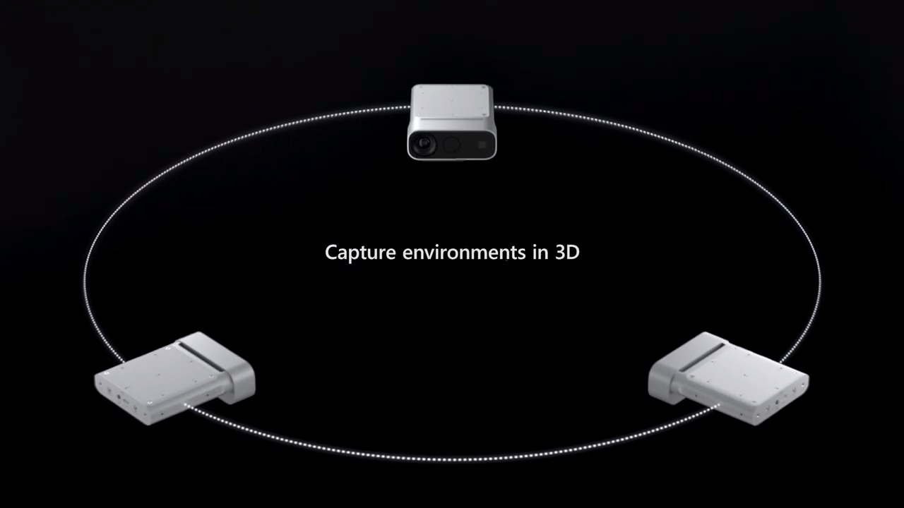
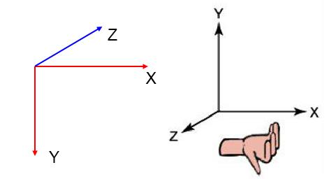
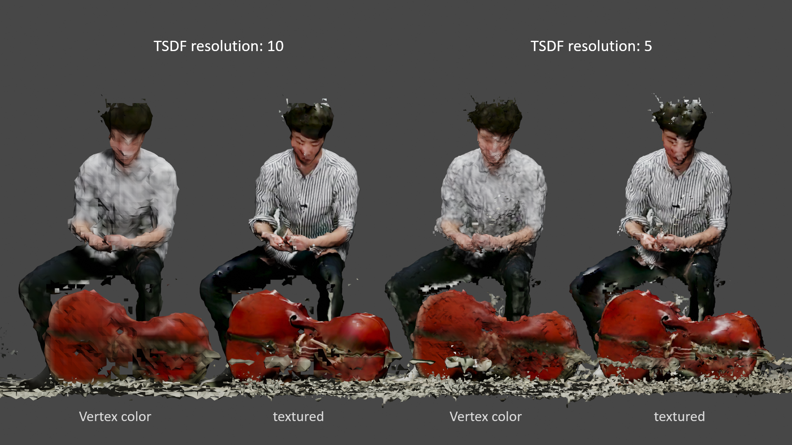
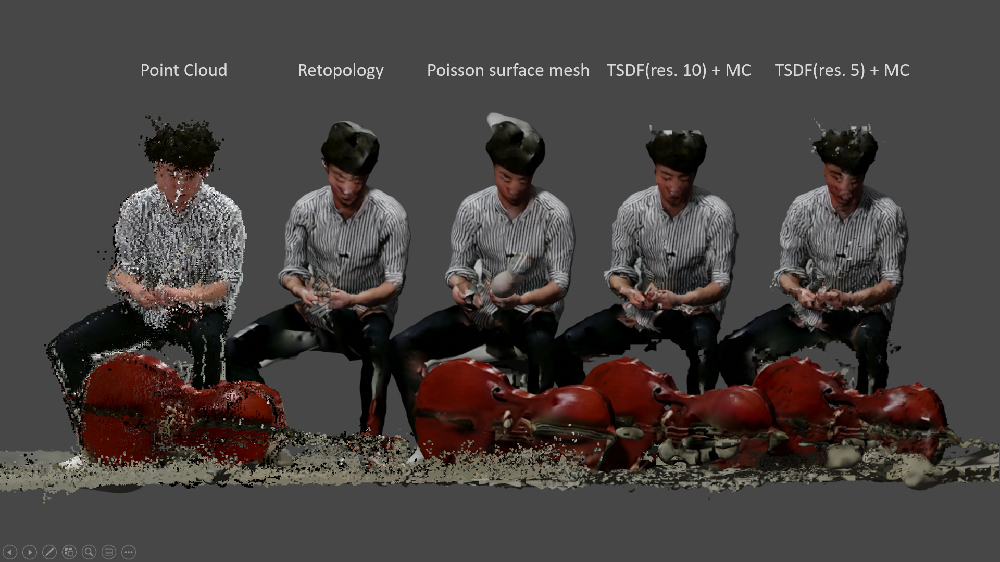
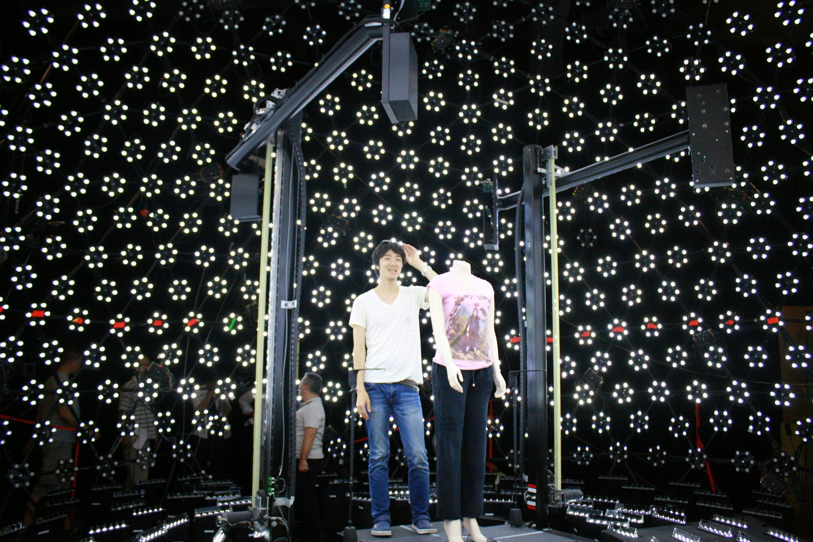

Hi everyone, I’m Naoya Iwamoto, a researcher in computer graphics field. I’m interested in character animation technology; deformation, facial animation, motion synthesis and control.
Recently I’m focusing on “Volumetric Video (VV)” technology, which can be captured dynamic movement of the living object. From this year I’ve read several research papers and also had some experiments for making VV. In this article, I would like to share tips got from my experiment shown below (Fig. 1).
How to Start Volumetric Video?
According to my sources, a system in volumetric video studio normally generates point cloud or mesh using around 100 synchronized DSLR cameras as same as photogrammetry setup. Even if those “Multi-View Stereo (MVS)” approach can get dense point cloud, it’s too expensive, right? Don’t worry. You can start from several depth sensors such as Azure Kinect, which can directly and independently get point cloud. It is a little bit noisy, but it can be reduced with post process.

Dataset using Multi-View Kinect
First of all, I thought to use Azure Kinect for my experiment, but it was still expensive for me… (around 450 USD/Kinect). Additionally it requires 3 or 4 Kinect at least for capturing 360 degree VV. Then, I found “PanopticStudio 3D PointCloud Dataset”, which is 3D point cloud dataset captured from 10 Kinect V2.
However, unfortunately this dataset is distributed not as 3D point cloud but colored video and depth acquired from each camera, camera parameters (written about position, angle, focal length and distortion) and time stamp for camera synchronization. The point is that you need to run code in their GitHub repository for generating point cloud yourself with synchronizing images got from each Kinect. Furthermore their code for generating point cloud were written in Matlab, which requires a licence for users…, so I re-written them with Python with “Open3D” library (describe later). It’s free :)
Finally I could export all point cloud acquired from multi-view Kinect as .ply format for each frame as shown in Fig. 4. A colored point cloud data was incredible large, so it would be more large for multiple frames. Therefore I also implemented a code to remove point cloud of the wall (dome) part based on a threshold for depth value on depth image. Eventually I could decrease point cloud into 25MB for each frame.
Making color point cloud was just a little difficult because the resolution of color and depth on Kinect was different. (Color: 1920×1080 (.jpg), depth: 512×424 (.png)). To pick-up color information, the point cloud generated from depth is necessary to be projected onto color image space. After picking-up color for each point, I re-projected on 3D space again. Honestly you can also ignore this process because we will apply texture mapping later.
Visualization on Blender
For visualization of point cloud, I used Blender 2.82 with add-on “Point Cloud Visualizer”, and it was very convenient to visualize colored point cloud sequences. The time loading point cloud sequences (110 frames in my case) were taken so long, and it may require large memory on your PC. In my case, it is Windows 10 (64bit), 16GB, GeForce RTX2020.
This “offline” process (mainly for data loading) requires to have patient for you. I’d like to think how to achieve in real-time when I’ve got multiple Kinect in near future :)
3D Library for Meshing
Generating point cloud and meshing can be achieved by using “Open3D”, which is 3D computer vision friendly library. I believe this might be the best choice to implement offline VV system for beginners. It was easy to acquire a mesh (.ply) from point cloud [sample]. However the Open3D library has “OpenCV”-like axis (X-right, Y-down, Z-front), so please carefully use on “OpenGL” software (Fig. 5).

I visualized the mesh generated from the dataset with lighting on Blender in Fig. 6. When you use “Truncated Sign Distance Function (TSDF)” function in Open3D for meshing, you can choose voxel resolution parameter (I used 5.0 in Fig. 6). I’ll describe the detail later. The mesh for each frame was about less than 20MB.
As a tips, Blender add-on “Stop-motion-OBJ” was really convenient for loading continuous mesh (.ply or .obj) sequences even though it takes much time for loading. If you can remove floor vertices, it would be faster for loading. I also implemented floor removal function using Blender Script.
3D Tool for Texture Mapping
Texture mapping was the most difficult part for this experiment because there is no popular library and tools. However, fortunately I’ve found texture mapping tutorial using MeshLab. The system inputs are mesh, camera intrinsic/extrinsic parameters and color texture acquired from each camera. Because I can’t find much detail related to texture mapping process on MeshLab, I spent a time to automatically input a mesh, color images and camera parameter as batch process (because it’s necessary for applying all frames). Finally I achieved texture mapping (2K texture resolution of my setting) for all frames (Fig. 7) by a process found by touch…
- Synthesizing MeshLab scene file by self-developed Python code
- Loading it using MeshLab script
- Applying texture mapping function from MeshLab script
Trial for Quality Improvement
To improve final visual quality based on texture mapping, TSDF parameter (mentioned at meshing part) is quite important. Through several trial of tuning TSDF parameter related to mesh resolution, I found that high resolution mesh occurred texture mapping artifact in some case like original point cloud has too much noise (Fig. 8).

Additionally, I’ve tried different type of meshing algorithm with using Wrap3 for Retopology and MeshLab for poisson surface mesh (Fig. 9). Poisson surface mesh seems better, but surface has been too smooth. It is still trade off between texture quality or shape quality in my trial.

Summary
In this article, I broke down my VV making experiment into each process; direction, dataset, making point cloud, visualization, meshing, texturing and parameter trial. I believe this is the shortest way to develop “offline” VV system even though taking a time for loading…
Furthermore I still have some artifact for the textured result because of noisy depth. At least, those noise might be decreased by closing each Kinect position to target. Therefore I need to purchase several Kinect for my next experiment.
Additionally, for solving basic noise issue, it would be necessary to develop surface tracking system such as “Embedded Deformation” with “Deformation Graph” shown in Fig. 10. The technique can be decreased noise by accumulating point cloud acquired for each frame.
What I Wanted To Do
Volumetric video technology has high potential to make new experience, visual and life. Unfortunately current my experiment is still “offline”, and I can easily guess that it’s so hard work to make it for real-time because it requires GLSL knowledge and skills. Debug is also difficult… Now, I’ll still continue offline experiment to achieve studio quality. Even this, it might be possible to help for making offline contents such as music video or movie using VV technology with “Head Mount Display (HMD)” soon.
VV is one of the technology and just a way to achieve a purpose. I’m always thinking that an important thing is a story behind of a technology. The story is meaningful and emotional, and the technology should be new and impressive. The thought might be similar with “Volumetric Filmmaking”. One of offline system “USC Light Stage” (Fig. 11) is also contributed to produce many contents with stories. That might be my current ideal.

Eventually, I might be proud if I can expand my own world by collaborating with many artists or creators to make new artworks. Thus I’d like to make meaningful and excited future through VV technology.
Writer:
Naoya Iwamoto [Instagram]
Bio:
Researcher in Computer Graphics field. After I received a Ph.D. (engineering), I joined a smartphone company in 2017. Currently I develop new animation technology combined with Augmented Reality technology.